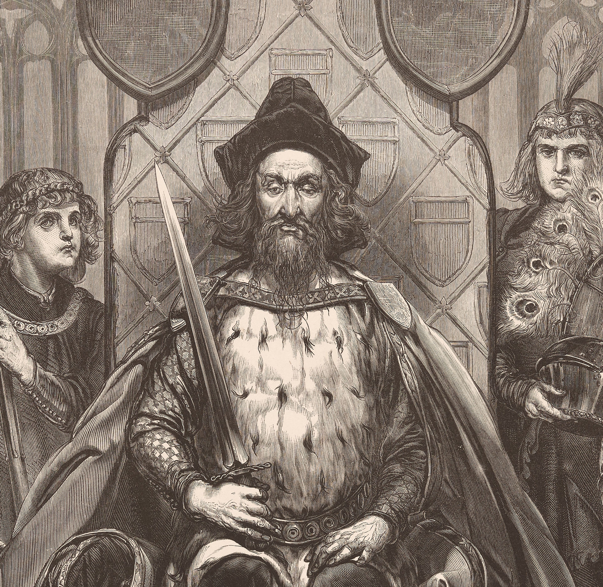
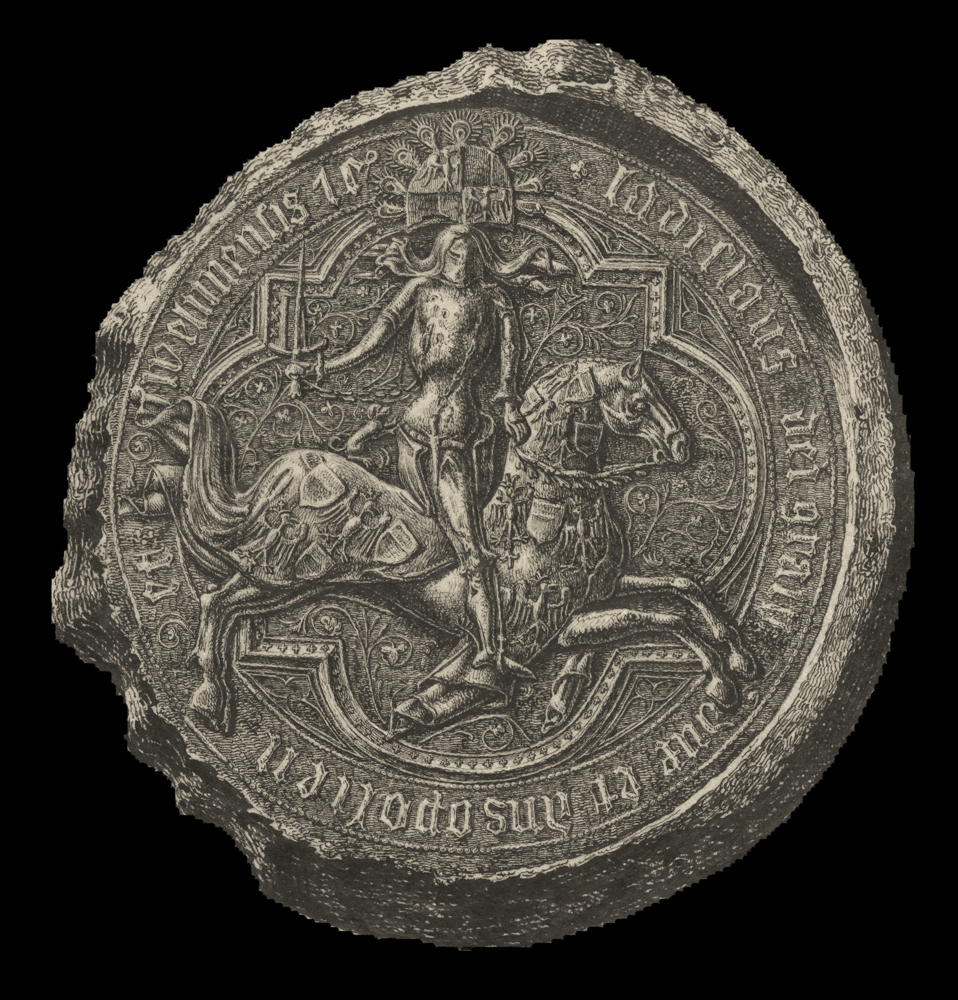
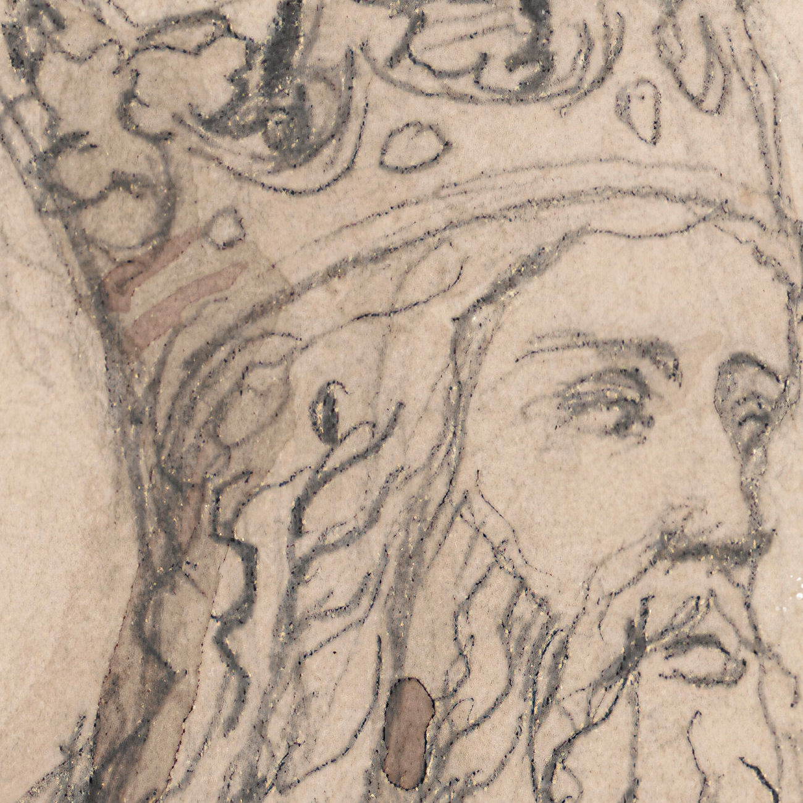
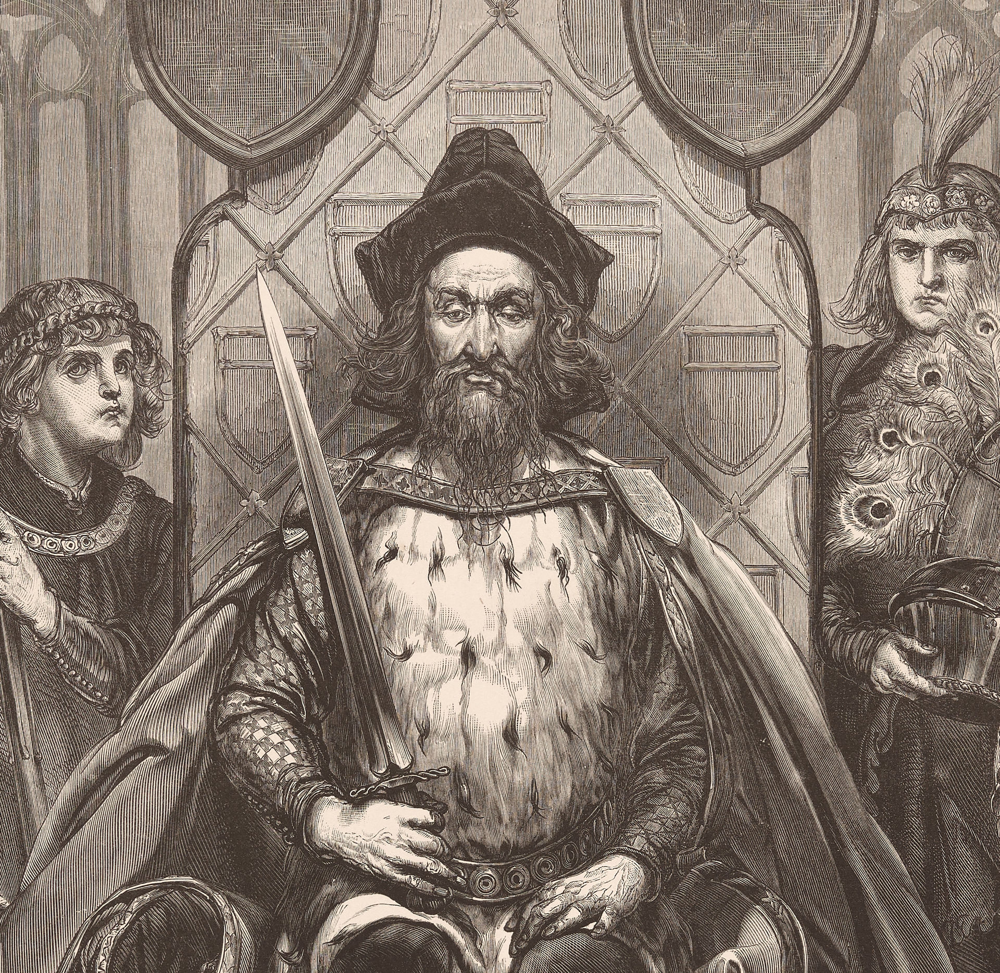
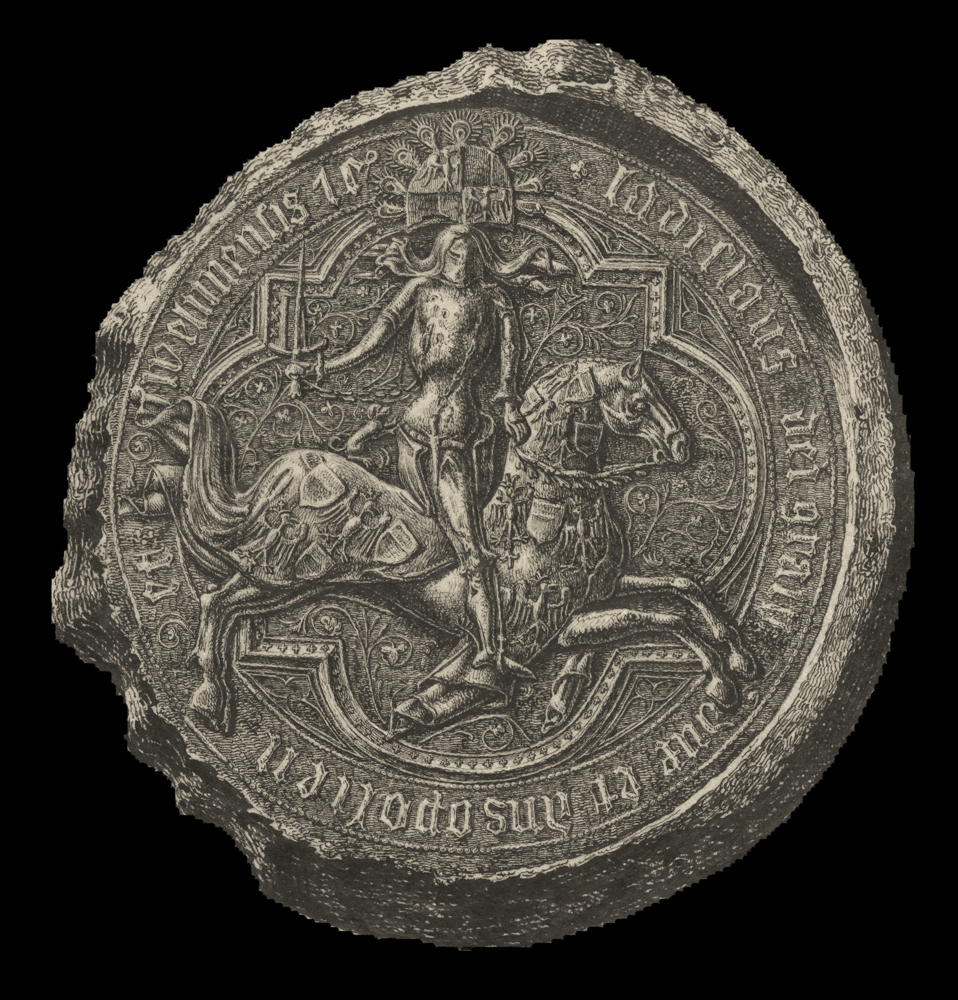
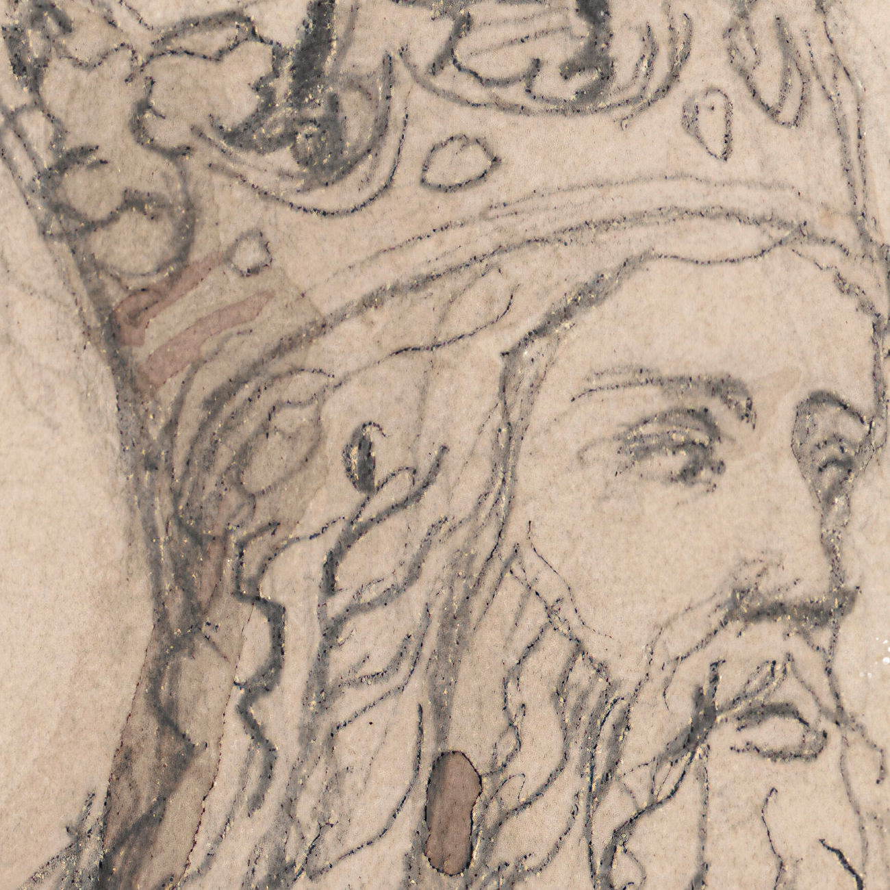

Krzepicach 24 sierpnia 1356 roku.
W imię Pana amen. Ponieważ chcemy, aby w świetnym naszym królestwie powaga naszych postanowień była trwała i nienaruszona. Dlatego aby było znane do obejrzenia, tak obecnym jak przyszłym, obecne pismo:
Dlatego my Kazimierz z Bożej łaski król Polski, a także Krakowa, Sandomierza, Sieradza, Łęczycy, Kujaw i Pomorza ziem pan i dziedzic, pragnąc powiększać owoce urodzajne z gajów, dąbrów i lasów i ustawicznie rozszerzać, więc biorąc pod uwagę godne prośby [przedstawione] nam przez naszych wiernych, pokornie kłaniających się, mianowicie Leonarda i Kanimira braci rodzonych, dziedziców Częstochowy (Czanstochoua), obecnie dajemy i nadajemy tymże Leonardowi i Kanimirowi pełną możność lokacji, na terytorium Krakowskim (Cracouiensi), dwu wsi na prawie niemieckim mianowicie Średzkim inaczej Nouifori, jedną na starym miejscu, w którym była położona wspomniana Częstochowa, którą wieś chcemy nazwać właśnie tymże imieniem, drugą zaś wieś położoną w dąbrowie w dziedzictwie tychże zwanym Częstochowa nad rzeką, która potocznie nazywają Rybna.
Znosimy również tamże zupełnie (całkowicie) będące w wszelkie prawa polskie i prawa zwyczajowe, zwykłe i dodatkowe powinności, które temu prawu niemieckiemu mogłoby przeszkadzać i stawać na przeszkodzie.
Dlatego zwalniamy tychże wspomnianych Leonarda i Kanimira i ich następców, a także sołtysów i kmieci wspomnianych wsi lokowanych od sądów i jurysdykcji wszystkich naszego Królestwa wojewodów, kasztelanów i jakichkolwiek sędziów i wiecznie uwalniamy, w ten sposób, że przed nimi lub przez tych nie powinni być pozywani w pewnych sprawach o głowę (o zabójstwo), kryminalnych, uszkodzenia członków, a ogólnie w [sprawach]większych i mniejszych, jedynie odpowiadać będą(inaczej jak) kmiecie przed swoimi sołtysami, wyznaczonymi przez wspomnianych Leonarda i Kanimira albo ich następców, sołtysi zaś przed panami swoimi, lub przed nami, wszelako skoro powoływać się będą na dokument nasz, zaopatrzony w naszą pieczęć, wtedy przed nami będą stawać, ale nie inaczej, będą odpowiadać jak w prawie swoim niemieckim.
Wreszcie, aby wyżej wymienione wsie szybciej i
lepiej mogły być urządzone (lokowane) na tym wspomnianym prawie niemieckim, wszystkim razem i każdemu z osobna kmieciom wsi wyżej wspomnianych
dajemy i przyznajemy pełną wolność od wszelkich naszych świadczeń, opłat i robocizn [na okres] dwudziestu lat bez przerwy, licząc od daty obecnej.
Na świadectwo tej rzeczy pieczęć naszą nakazujemy przywiesić. Działo się w Krzepicach („in Crzepyce”), w dniu świętego Bartłomieja apostoła (24 sierpnia)
roku Pańskiego M CCC L szóstego (1356). W obecności Janusza prepozyta kościoła w Gnieźnie, Dobiesława kasztelana wiślickiego, Mikołaja podstolego, Jana podczaszego,
Mszczuja łowczego krakowskich, a także Prandoty burgrabiego naszego tamże w Krzepicach. Spisano ręka Grzegorza pisarza dworu naszego.
Tłumaczenie
Andrzej Kuźma, Karol Nabiałek
Częstochowa zalicza się do najstarszych osad w północno-zachodniej Małopolsce. Po raz pierwszy jej nazwę odnotowano w 1220 r. Biskup krakowski Iwo Odrowąż wystawił wówczas dokument dla klasztoru kanoników regularnych z Mstowa, w którym m.in. odnajdujemy wzmiankę o Częstochowie. W dzierżawczej nazwie osady przechowało się słowiańskie imię Częstocha, pochodzące od imienia Częstobór lub Częstomir, legendarnego jej założyciela i pierwszego posiadacza.
W 1250 r. osadę wymienia bulla papieża Innocentego IV. W kolejnych l. 1325–1327 kościół parafialny w Częstochowie jest wzmiankowany w wykazach świętopietrza, sporządzonych przez kolektorów papieskich. Ważne dla miasta dokumenty wiążą się z osobą króla Kazimierza Wielkiego, ostatniego Piasta na tronie polskim, który bawił w Częstochowie w 1354 r., gdzie spisano dokument na wójtostwo we wsi Siedlec. W 1356 r.
Kazimierz III Wielki wystawił kolejny dokument, wyraźnie sugerujący, że Częstochowa była obarczona obowiązkiem stanu, czyli powinnością goszczenia monarchy i jego orszaku podczas podróży po kraju. W tym samym roku król nadał przywilej braciom Leonardowi i Kanimirowi na lokację dwóch wsi, „jednej zwanej Częstochową i drugiej nad rzeką w dąbrowie tegoż dziedzictwa Częstochowy”.
Częstochowa is one of the oldest settlements in north-western Lesser Poland. Its name was recorded for the first time in 1220. Iwo Odrowąż, the Bishop of Kraków, issued a document to the regular canons at the Mstów convent, where, among other things, we find Częstochowa first mentioned. The Slavic name of Częstoch, which derived from the name Częstobór or Częstomir, the legendary founder and first owner of the settlement, remained in the name of the settlement.
In 1250 the settlement name appears on the bull (papal seal) of Pope Innocent IV. In the following years (1325-1327) the parish church in Częstochowa is mentioned in the lists of the Saint Peter fee prepared by papal collectors. The important city documents are connected with King Casimir the Great, the last Piast king to sit on the Polish throne, who stayed in Częstochowa in 1354, where a document for the reeve in the village of Siedlec was written.
In 1356, Casimir the Great issued another document, clearly suggesting that Częstochowa was burdened with the duty of the state, that is, the duty of hosting the monarch and his retinue during his travels around the country. In that same year, the king granted two brothers, Leonard and Kanimir, the privilege to settle two villages, “one called Częstochowa and the other by the river in Dąbrowa of the same Częstochowa heritage”.